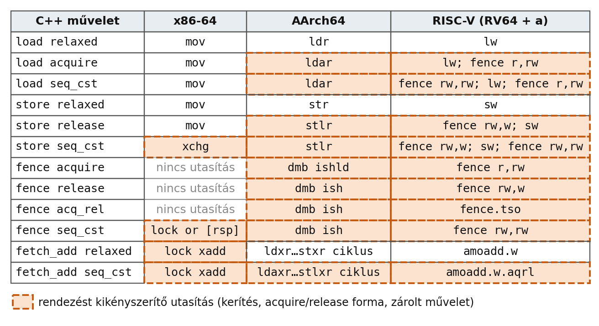

Valaki egy sima bool jelzővel vár egy másik szálra:
int data;
bool ready; // sima bool: nem szinkronizál!
int var_sima() {
while (!ready) {} // adatverseny, ha egy másik szál írja a ready-t
return data;
}A GCC 15.2.0 -O2 kapcsolóval, -Wall -Wextra
mellett figyelmeztetés nélkül ezt a kódot adja (Intel-szintaxis, a
direktívák nélkül):
_Z8var_simav:
mov eax, DWORD PTR data[rip]
retA várakozó ciklus eltűnt: a függvény azonnal visszaadja, ami éppen a
data-ban van. Itt nem a hardver rendezett át semmit; a
fordító már a gépi kód előtt más programot írt, és joga volt hozzá. Az
előző három alfejezet a hardver modelljeit tárgyalta, de a programozó
C++-ban ír. Kell egy szerződés, amely a nyelv szintjén mondja meg, mit
láthat egy szál, és amelyre a fordító és a processzor is kötve van. Ez a
C++ memóriamodell [S-CPPREF-MO].
Két réteg van egymás fölött. A felsőn a C++ kód és a C++
memóriamodell: ez a szerződés a programozó és a fordító között. Az alsón
az utasítássorozat és a processzor memóriamodellje (TSO, gyenge). A
fordító feladata, hogy a felső réteg minden ígéretét az alsó réteg
eszközeivel teljesítse: mov, stlr vagy
fence, amelyik kell. Az ábra a leggyakoribb mintát, a
jelzős üzenetátadást mutatja mindkét rétegben.
Olvassuk a nyilakat: az adat írásától a jelzőn át az adat olvasásáig egyetlen irányított út vezet. Ha ez az út megvan, a fogyasztó biztosan az új adatot látja, bármelyik processzoron. Az alsó sorban pedig az látszik, hogy ugyanaz az ígéret x86-on semmibe sem kerül, a másik két gépen kerítést vagy külön utasítást kér.
Definíció. Egy szálon belül sorrendben megelőzi (sequenced-before) -t, ha a program szerint előbb értékelődik ki. Egy release művelet szinkronizál (synchronizes-with) egy acquire művelettel, ha az által beírt értéket olvassa (vagy olyat, amelyet az -val induló release-sorozat, például egy rá következő atomi RMW írt). A happens-before (előbb történik) reláció e kettőből láncolással épül fel.
Definíció. Adatverseny (data race): két szál ugyanazt a memóriahelyet éri el, legalább az egyik ír, legalább az egyik hozzáférés nem atomi, és egyik sem előzi meg a másikat happens-before szerint. Az adatversenyes program viselkedése nem definiált (undefined behavior).
A nem definiált viselkedés nem „valamelyik érték a kettő közül”: a fordító feltételezheti, hogy adatverseny nincs, és erre a feltevésre optimalizál. A motiváció ciklusa pontosan ezt használta ki: egy mellékhatás nélküli ciklus, amely egyszálúan nézve vagy soha nem fut, vagy soha nem ér véget, törölhető.
Cserébe a modell erős ígéretet ad a helyes programnak: ha nincs
adatverseny, és minden atomi művelet seq_cst (vagy a
szinkronizáció zárakkal történik), a program úgy viselkedik, mintha
szekvenciálisan konzisztens gépen futna (lásd Szekvenciális konzisztencia és
litmus-tesztek).
Az std::atomic műveletei egy
std::memory_order paramétert kapnak; alapértelmezése a
legerősebb.
| Rendezés | Mit ígér | Tipikus használat |
|---|---|---|
relaxed |
atomicitás és változónként egységes módosítási sorrend; más változókat nem rendez | statisztikai számláló |
acquire (betöltés) |
a későbbi műveletek nem kerülhetnek elé; release-ből olvasva szinkronizál | jelző olvasása, zár megszerzése |
release (tárolás) |
a korábbi műveletek nem kerülhetnek mögé | jelző írása, zár elengedése |
acq_rel (RMW) |
egyszerre mindkettő | zárolt módosítás |
seq_cst |
acquire/release, és a seq_cst műveleteknek egyetlen
közös, a programsorrenddel összhangban álló sorrendje |
alapértelmezés, SB-szerű minták |
A consume rendezést a gyakorlatban a fordítók
acquire-ré erősítik, ezért nem foglalkozunk vele. Kerítés
is írható: az std::atomic_thread_fence(release) utáni
relaxált tárolás és a relaxált betöltés utáni
atomic_thread_fence(acquire) ugyanúgy szinkronizál, mint a
jelölt műveletek, ha a betöltés a tárolt értéket látja.
A leggyakoribb hiba az, hogy a párnak csak az egyik fele van meg. A release önmagában senkivel sem szinkronizál.
A hardvermodell ismerete nem elég, mert a fordító a nem atomi műveleteket szabadon mozgathatja, összevonhatja és törölheti, amíg egy adatverseny nélküli program viselkedése nem változik.
int a, b, data;
std::atomic<int> flag;
void sorrend() { a = b + 1; b = 0; }
void jelez_relaxed() { data = 1; flag.store(1, std::memory_order_relaxed); data = 2; }
void jelez_release() { data = 1; flag.store(1, std::memory_order_release); data = 2; }Ugyanazzal a fordítóval
(g++ -O2 -std=c++20 -S -masm=intel) a lényeg:
_Z7sorrendv: ; b írása megelőzi az a írását
mov eax, DWORD PTR b[rip]
mov DWORD PTR b[rip], 0
add eax, 1
mov DWORD PTR a[rip], eax
_Z13jelez_relaxedv: ; data = 1 eltűnt, data = 2 a jelző UTÁN
mov DWORD PTR flag[rip], 1
mov DWORD PTR data[rip], 2
_Z13jelez_releasev: ; data = 1 a jelző előtt maradt
mov DWORD PTR data[rip], 1
mov DWORD PTR flag[rip], 1
mov DWORD PTR data[rip], 2(A ret sorokat elhagytuk.) A sorrend
függvény a b tárolását hozta előre. A
jelez_relaxed törölte az első tárolást: a
relaxed jelző nem tiltja, hogy a korábbi tárolás a jelző
mögé kerüljön, ott pedig a második felülírja. A volatile
sem megoldás: csak a volatile hozzáférések egymás közti
sorrendjét őrzi a fordítóban, kerítést és szinkronizációt nem ad.

A táblázat eredete pontosan: az x86-64 oszlop a GCC
15.2.0 -O2 kimenete C++ forrásból; az
AArch64 (alap Armv8.0-A) és az RV64
oszlopot az LLVM 21.1.8 kódgenerátora adta a C++ műveletekkel
egyenértékű köztes kódból. Más fordító, verzió vagy célkapcsoló mást
adhat: LSE-t engedélyezve (+lse) az AArch64
fetch_add egyetlen utasítás lesz (a rendezés szerint
ldadd vagy ldaddal), RCpc-vel
(+rcpc) az acquire betöltés ldapr
lesz, a seq_cst betöltés ldar marad. A saját
fordítód kimenetét így nézheted meg (keresztfordító híján a Compiler
Explorerben [S-GODBOLT]):
g++ -O2 -std=c++20 -S -masm=intel mo.cpp -o - # x86-64
aarch64-linux-gnu-g++ -O2 -std=c++20 -S mo.cpp -o - # ha telepítve vanMiért helyes a leképezés? x86-on a TSO minden közönséges betöltést
acquire-ré, minden tárolást release-zé tesz, egyedül a W→R sorrend
hiányzik: ezt a seq_cst tárolás xchg-je
pótolja, ezért maradhat a betöltés mov. AArch64-en az
stlr–ldar pár egymás közt is rendezett, így
seq_cst-nek is elég. RISC-V-n a rendezést a
fence utasítások adják.
Továbbvitt eredmény. A leképezés: x86-64-en a
relaxed/acquire/release
hozzáférés és minden betöltés mov, a seq_cst
tárolás xchg, az atomi RMW zárolt utasítás minden
rendezésnél; AArch64-en ldr/str relaxed,
ldar/stlr acquire, release és
seq_cst; RISC-V-n lw/sw a
megfelelő fence-ekkel, az RMW amo…
.aq/.rl jelöléssel. Atomi
műveletek a hardverben az RMW-k megvalósítását, Zárak és tranzakciós memória a zárak
acquire/release műveleteit erre építi.
x86-on az ár a tárolásnál jelentkezik: az xchg zárolt
utasítás, megvárja a tárolópuffer kiürülését. Az RMW viszont minden
rendezésnél zárolt, ezért ott a seq_cst nem drágább; ezt a
mérés is mutatja:
import sys; sys.path.insert(0, "code")
from archkit import perf
meta, rows = perf.read_bench_csv("figures/data/ca063-atomik.csv")
print(meta["cpu"], "·", meta["date"][:10], "· medián, ns / művelet")
for op in ("fetch_add_relaxed", "fetch_add_seqcst"):
vals = {r["cpus"]: r["median_ns_per_op"] for r in rows if r["op"] == op}
print(f"{op:18}", " ".join(f"{n} szál: {vals[c]:6.2f}" for n, c in
((1, 0), (2, "0 2"), (4, "0 2 4 6"))))13th Gen Intel(R) Core(TM) i5-13400F · 2026-11-25 · medián, ns / művelet
fetch_add_relaxed 1 szál: 3.96 2 szál: 17.14 4 szál: 37.13
fetch_add_seqcst 1 szál: 3.96 2 szál: 17.03 4 szál: 37.22(A szálak külön fizikai magokon futottak.) A két rendezés között 1 %
alatti az eltérés, mert a mérőprogramban mindkettő ugyanaz a zárolt
utasítás; a szálszámmal növekvő idő a cache-sor vándorlásának ára (A koherencia ára: ping-pong és false sharing). A
seq_cst tárolás árát itt nem mértük (a 6. feladat megkér
rá). AArch64-en és RISC-V-n a költség a megvalósítástól függ, általános
számot nem adunk.
A teljes program ezer körön át ellenőrzi, hogy a fogyasztó a friss adatot látja-e:
#include <atomic>
#include <cstdio>
#include <thread>
int data = 0; // sima (nem atomi) változó
std::atomic<bool> ready{false}; // a jelző
int main() {
int hibas = 0;
for (int kor = 0; kor < 1000; ++kor) {
data = 0;
ready.store(false, std::memory_order_relaxed);
std::thread fogyaszto([&] {
while (!ready.load(std::memory_order_acquire)) {}
if (data != 42) ++hibas;
});
std::thread termelo([] {
data = 42;
ready.store(true, std::memory_order_release);
});
termelo.join();
fogyaszto.join();
}
std::printf("hibas korok: %d / 1000\n", hibas);
}hibas korok: 0 / 1000Ha mindkét rendezést relaxed-re cseréljük, az x86-os
gépünkön a program ugyanígy 0 / 1000-et ír ki. A hibát a
ThreadSanitizer (g++ -O1 -g -pthread -fsanitize=thread)
mégis megtalálja: a relaxed változatnál „WARNING:
ThreadSanitizer: data race” jelentést ad a data olvasására
és írására, a release/acquire változatnál nem ad jelzést. A helyes
kimenet tehát nem bizonyítja a helyes programot.
A lánc. Release/acquire jelzővel, ha :
data = 1 sorrendben megelőzi a
flag.store(1, release) műveletet (egy szál).flag.load(acquire)-rel, mert
az az 1-et olvasta.r2 = data-t.data = 1 happens-before
r2 = data. Nincs adatverseny, és
.Ha a betöltés relaxed, a 2. lépés elmarad: nincs lánc, a
sima data olvasása versenyben áll az írással, a program
viselkedése nem definiált. Ha a data is atomi
(relaxed), nincs verseny, de
megengedett.
Ugyanez RISC-V-n. A fordítás: P0:
sw data; fence rw,w; sw flag. P1:
lw flag; fence r,rw; lw data. A
Gyenge modellek: ARM és RISC-V szabályai
szerint a két kerítés megtartja x=1 → y=1 és
r1=y → r2=x sorrendet, és a körérvelés
ugyanaz, mint ott:
,
tiltott. A C++ lánc minden szeméhez tartozik egy gépi szabály.
SB C++-ban.
x.store(1, release); r1 = y.load(acquire); mindkét szálban:
a szabvány megengedi a
-t,
mert a release–acquire párok sehol sem alkotnak láncot (egyik betöltés
sem olvas a másik szál tárolásából). Csak a seq_cst közös
sorrendje (vagy seq_cst kerítés) tiltja.
Az archkit.consistency a fenti leképezéssel lefordítja a
mintát, majd a célarchitektúra modelljében felsorolja a kimeneteket. Az
mp_verdict a C++ szabályt adja (sima data
esetén az adatversenyt is jelzi):
from archkit import consistency as mm
print(f"{'tárolás':8} {'betöltés':8} {'C++':12}" + "".join(f"{a:>9}" for a in mm.ARCHS))
for store, load in (("relaxed", "relaxed"), ("release", "relaxed"), ("relaxed", "acquire"),
("release", "acquire"), ("seq_cst", "seq_cst")):
hw = ["igen" if (1, 0) in mm.mp_outcomes(a, store, load) else "nem" for a in mm.ARCHS]
row = "".join(f"{h:>9}" for h in hw)
print(f"{store:8} {load:8} {mm.mp_verdict(store, load):12}{row}")tárolás betöltés C++ x86-64 AArch64 RISC-V
relaxed relaxed megengedett nem igen igen
release relaxed megengedett nem igen igen
relaxed acquire megengedett nem igen igen
release acquire tiltott nem nem nem
seq_cst seq_cst tiltott nem nem nem(A jobb oldali oszlopok: elérhető-e az , kimenet a lefordított programban.) Az x86 oszlopa mindenütt „nem”, mégis három sorban a C++ megengedi a rossz kimenetet: a fordító átrendezhet, és egy másik gépen a hiba megjelenik. Ahol viszont a szabvány tilt, ott mindhárom leképezés is tilt.
Ugyanez a leképezés SB-n:
def sb_allowed(arch, store, load):
def side(mine, other, tmp, reg):
return "; ".join(mm.hw_sequence(arch, "store", store, mine, tmp)
+ mm.hw_sequence(arch, "load", load, other, reg))
t = mm.litmus("SB", side("x", "y", "r8", "r1"), side("y", "x", "r9", "r2"),
cond="r1 == 0 and r2 == 0")
return mm.explore(t, mm.HW_MODEL[arch]).allowed
for store, load in (("release", "acquire"), ("release", "seq_cst"), ("seq_cst", "seq_cst")):
print(f"{store:8} {load:8}", {a: sb_allowed(a, store, load) for a in mm.ARCHS})release acquire {'x86-64': True, 'AArch64': False, 'RISC-V': True}
release seq_cst {'x86-64': True, 'AArch64': False, 'RISC-V': False}
seq_cst seq_cst {'x86-64': False, 'AArch64': False, 'RISC-V': False}A C++ szabvány mindhárom párosítás közül csak az utolsót tiltja. Az
AArch64 az stlr–ldar pár miatt az elsőt is,
tehát erősebb, mint a nyelv ígérete; erre építeni hiba, mert más
fordítás (például ldapr) vagy más gép visszahozza a
-t.
-O2 alatt „átugrik”. Ok: sima
bool jelző, adatverseny. Javítás:
std::atomic<bool>, release tárolás és acquire
betöltés.seq_cst műveletek vagy seq_cst kerítés.mov az acquire betöltéshez?seq_cst a release/acquire-en felül?data mellett, ha a tárolás seq_cst, a betöltés
relaxed? És ha a betöltés mögé acquire-kerítés kerül?x változó release rendezésű tárolása
(store) és seq_cst rendezésű betöltése
(load).akar[en].store(true, release); if (!akar[1-en].load(acquire)) ...)
helyes, mert AArch64-en tesztelte, és sosem hibázott. Cáfold meg.sb_allowed
mintájára vizsgáld meg az SB-t az összes store/load rendezéspárra, és
listázd, mely párok tiltják a
-t
mindhárom architektúrán.relaxed, illetve seq_cst tárolások
sorozatát időzíti (std::chrono, ismétlés, medián), és nézd
meg az assemblyjét. Mit vársz, és mit kell a jegyzőkönyvben
rögzítened?A C++ memóriamodell a programozó és a fordító szerződése. Adatverseny
(szinkronizálatlan ütköző hozzáférés, amelyből legalább egy nem atomi)
nem definiált viselkedés. A release tárolás és az azt olvasó acquire
betöltés szinkronizál, a happens-before lánc teszi láthatóvá az adatot;
relaxed nem rendez, seq_cst közös sorrendet
ad. A fordító is átrendez és töröl. A leképezés: x86-64-en
mov, a seq_cst tárolás xchg;
AArch64-en ldar/stlr; RISC-V-n
fence utasítások (a vizsgált GCC 15.2.0, illetve LLVM
21.1.8 szerint). A hardver lehet erősebb a nyelv ígéreténél, de arra nem
szabad építeni. A tesztek helyes kimenete nem bizonyítja a
helyességet.
seq_cst műveletek egyetlen, minden szálra egységes
sorrendjét.1. seq_cst tárolás release-nek is
számít, de a relaxed betöltés nem acquire: nincs
szinkronizáció,
,
megengedett. Az acquire-kerítés a relaxált betöltéssel együtt acquire
hatású: ekkor tiltott.
2. x86-64: mov és mov.
AArch64: stlr és ldar. RISC-V:
fence rw,w; sw és
fence rw,rw; lw; fence r,rw.
3. (a) data = 1 sorrendben megelőzi a
release-kerítést, az a relaxált jelzőtárolást. (b) A fogyasztó relaxált
betöltése az 1-et olvassa, utána acquire-kerítés áll: a release-kerítés
szinkronizál az acquire-kerítéssel. (c) A kerítés sorrendben megelőzi
r2 = data-t. (d) Láncolva: data = 1
happens-before r2 = data.
4. A C++ csak seq_cst-tel tiltja a
kölcsönös belépést; a release/acquire pár SB-mintában nem ad láncot. Az
AArch64 stlr–ldar fordítás éppen erősebb, mint
a nyelv, de x86-on a tárolás sima mov, és a hiba
előjöhet:
print({a: sb_allowed(a, "release", "acquire") for a in mm.ARCHS}){'x86-64': True, 'AArch64': False, 'RISC-V': True}5.
for store in ("relaxed", "release", "seq_cst"):
for load in ("relaxed", "acquire", "seq_cst"):
if not any(sb_allowed(a, store, load) for a in mm.ARCHS):
print("mindhárom tiltja:", store, load)mindhárom tiltja: seq_cst acquire
mindhárom tiltja: seq_cst seq_cstA leképezés szintjén a seq_cst tárolás
acquire betöltéssel is tilt, a C++ szabvány viszont csak a
seq_cst–seq_cst párt garantálja.
6. A program lényege (a teljes mérést a saját gépeden futtasd; számot ide nem írunk):
#include <algorithm>
#include <atomic>
#include <chrono>
#include <cstdio>
#include <vector>
std::atomic<int> x;
template <std::memory_order O>
double ns_per_store(int n) {
std::vector<double> t;
for (int rep = 0; rep < 11; ++rep) {
const auto start = std::chrono::steady_clock::now();
for (int i = 0; i < n; ++i) x.store(i, O);
const std::chrono::duration<double, std::nano> d =
std::chrono::steady_clock::now() - start;
t.push_back(d.count() / n);
}
std::sort(t.begin(), t.end());
return t[t.size() / 2];
}
int main() {
std::printf("relaxed %.3f ns\n", ns_per_store<std::memory_order_relaxed>(1 << 22));
std::printf("seq_cst %.3f ns\n", ns_per_store<std::memory_order_seq_cst>(1 << 22));
}Várakozás x86-on: a seq_cst változat lassabb, mert
xchg-et ad ki (ellenőrizd -S kapcsolóval, hogy
a ciklus valóban ezt tartalmazza). Jegyzőkönyv: processzor,
mag-hozzárendelés, fordító és kapcsolók, frekvenciaszabályozó,
ismétlésszám, medián és szóródás (Benchmarkolás:
mérni tanulni).